Credit risk analytics · SQL · Python · IFRS 9 · Power BI
Loan default risk and the IFRS 9 loss allowance
Northbridge Lending made 50,000 personal loans in 2021 – 2024. I cleaned the loan extract into SQLite, answered the credit questions in SQL, built an application scorecard, measured vintages, roll rates and loss given default, estimated the IFRS 9 expected credit loss with forward-looking scenarios, and backtested it against the following year's defaults. Everything is in a Power BI dashboard.
Synthetic data. 50,000 loans and 1.16 million monthly payment records from a documented generator. The true default process is known, so every cleaning step, model coefficient and estimate is checked against the truth.
Findings
- The lender's grade ranks risk well: 2.8% of grade-A loans default within 24 months, 26.8% of grade-G, and the interest rate rises from 9.4% to 30.9% with it. Credit score is the strongest single driver (620-659 defaults 7.6x as often as 780+); small-business and medical loans are the riskiest purposes.
- The July 2023 policy change (online debt-to-income limit raised from 40% to 50%) added 595 loans that default 1.7x as often (6.4% vs 3.8% in 12 months). They pay 5.3 points more interest, which covers the ~1.9 points a year of extra expected loss.
- Losses follow the economy: the 2023 vintage reached 10.1% defaults by month 24 vs 7.1% for 2021, because it met the 2024 unemployment peak early in life. Each extra point of unemployment raises default starts by 35% (the generator's true value: 35%).
- Half of loans 30 days late cure; the other half roll on, and half of those default. Loss given default is 72% (66% with a mortgage, 77% for renters).
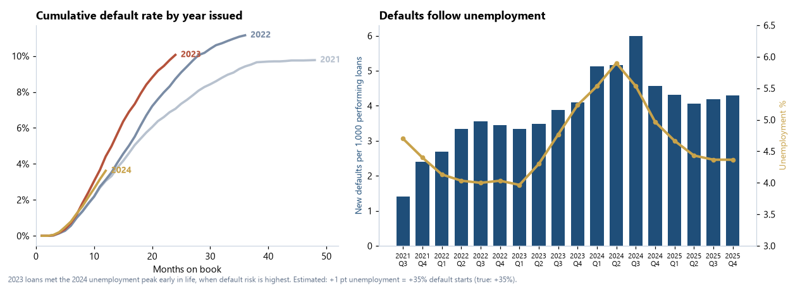
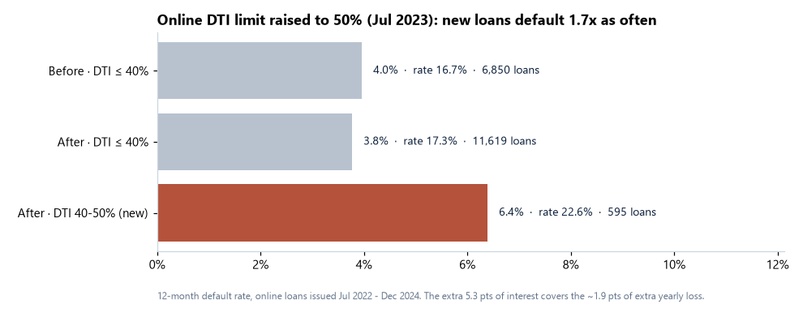
Application scorecard
Binned characteristics, Weight of Evidence, logistic regression, points (600 = 50:1 odds). Trained on 2021-22 loans and tested on 2023 loans it never saw. A plain logistic regression recovers all 15 true effects with the right sign (correlation 0.97).
| Model | Gini, development | Gini, out of time | KS, out of time |
|---|---|---|---|
| Scorecard (logistic regression on WoE) | 0.39 | 0.38 | 0.29 |
| Lender grade A-G | 0.33 | 0.32 | 0.22 |
| Gradient boosting (challenger) | 0.45 | 0.37 | 0.27 |
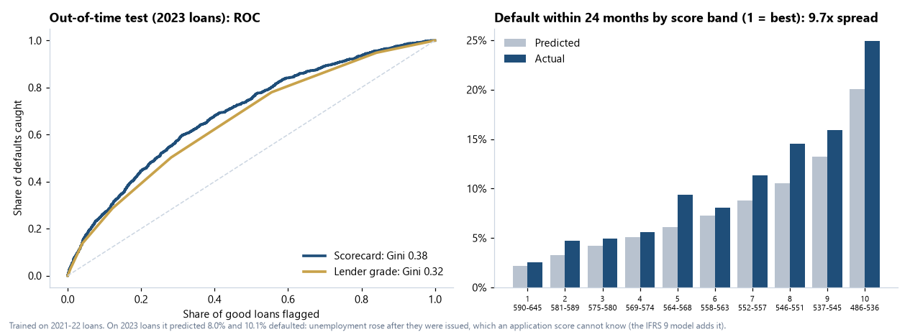
IFRS 9 expected credit loss
Stage 3: 90+ days late. Stage 2: 30-89 days late or cured in the last 6 months. PD from a monthly default hazard by months on book, scaled by score band and unemployment; LGD from completed recoveries; three weighted unemployment scenarios. Everything is estimated only from data known at the reporting date.
| 31 Dec 2025 | Loans | Exposure | ECL | Coverage |
|---|---|---|---|---|
| Stage 1 · 12-month PD | 19,572 | $152.0M | $3.32M | 2.18% |
| Stage 2 · lifetime PD | 2,236 | $18.6M | $1.72M | 9.20% |
| Stage 3 · defaulted | 178 | $2.0M | $1.45M | 72.7% |
| Total | 21,986 | $172.6M | $6.48M | 3.76% |
Backtest: the PDs set at Dec 2024 expected 1,525 defaults in 2025 and 1,290 happened. With 2025's actual unemployment, which fell, the same model would have expected 1,371 (within 6%): the PD model is sound and the gap is the prudent economic outlook.
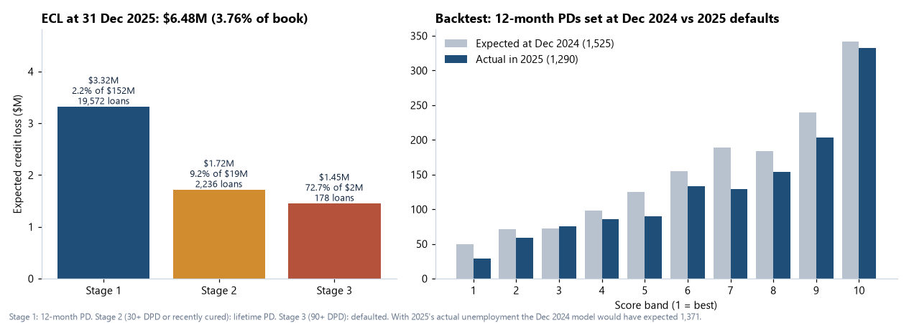
Power BI dashboard
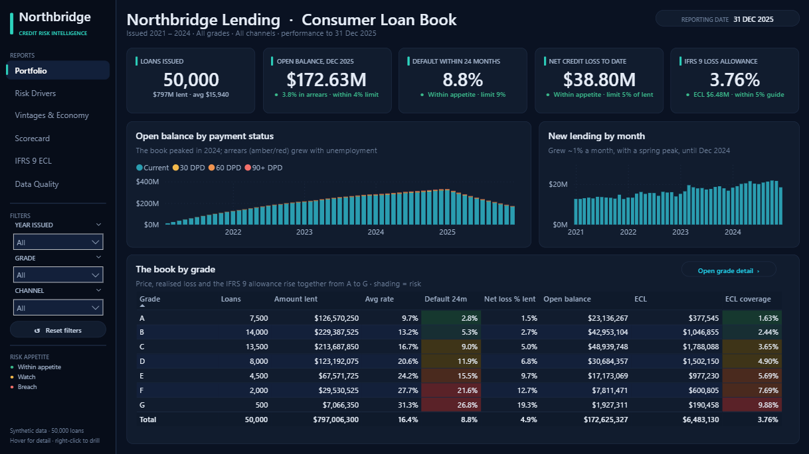
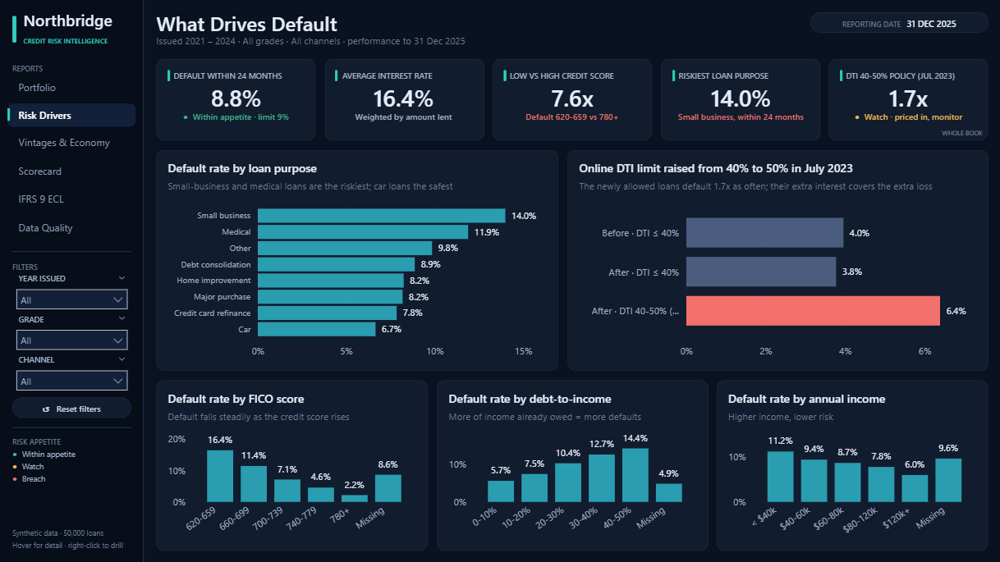
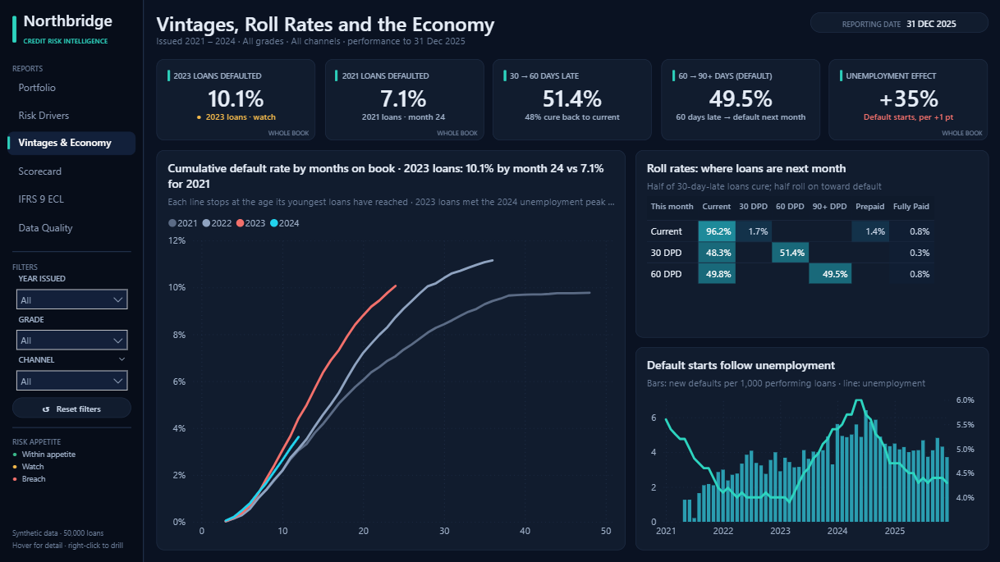
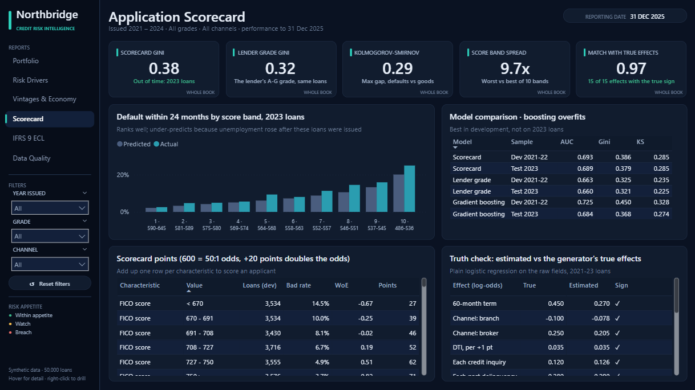
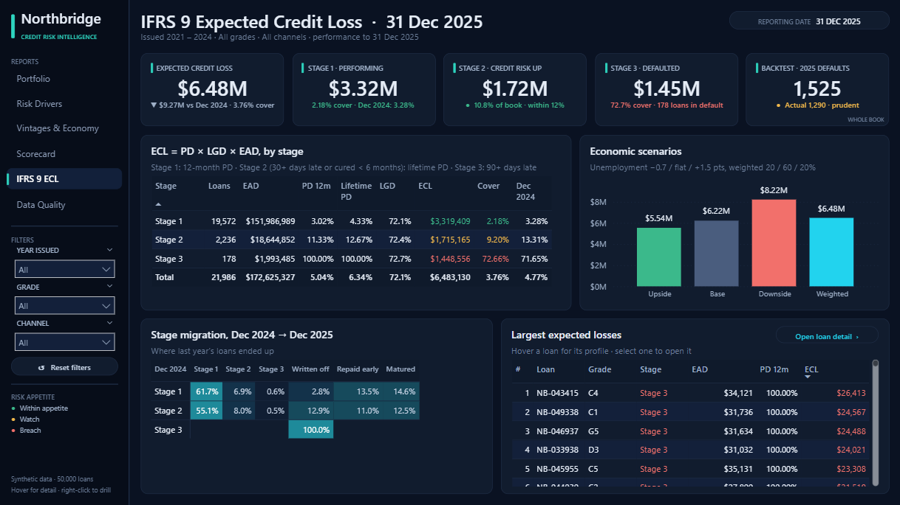
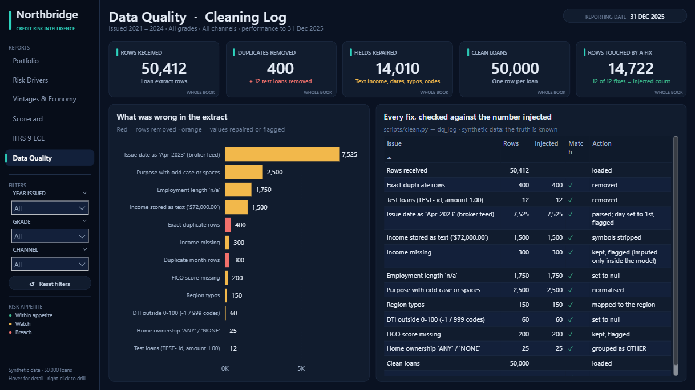
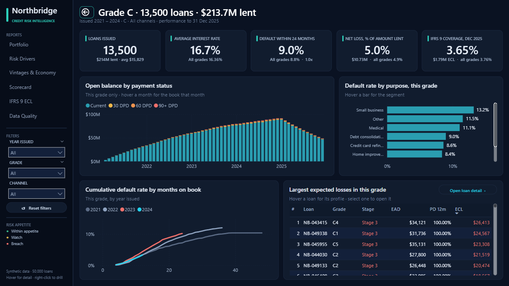
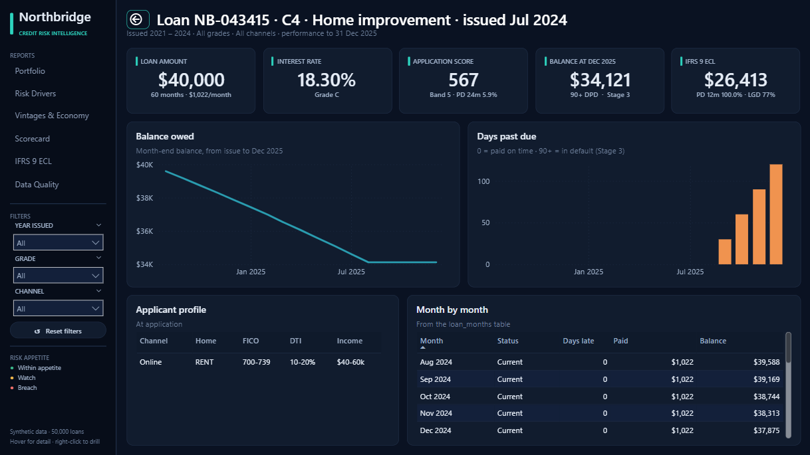